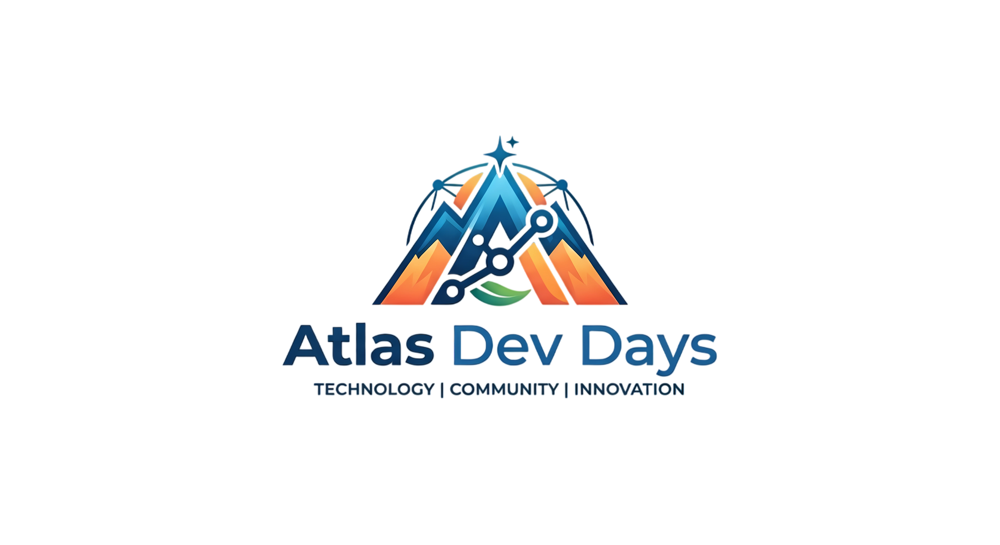

Thomas Leroy
Architecte logiciel

28–29 octobre 2026
Youcode — Nador
S'inscrireAtlas Dev Days est la première conférence dédiée aux développeurs web au Maroc. Pendant deux jours : des talks, des ateliers pratiques et des rencontres avec des entreprises tech.
Architecte logiciel

Ingénieure IA

Développeur Back-end